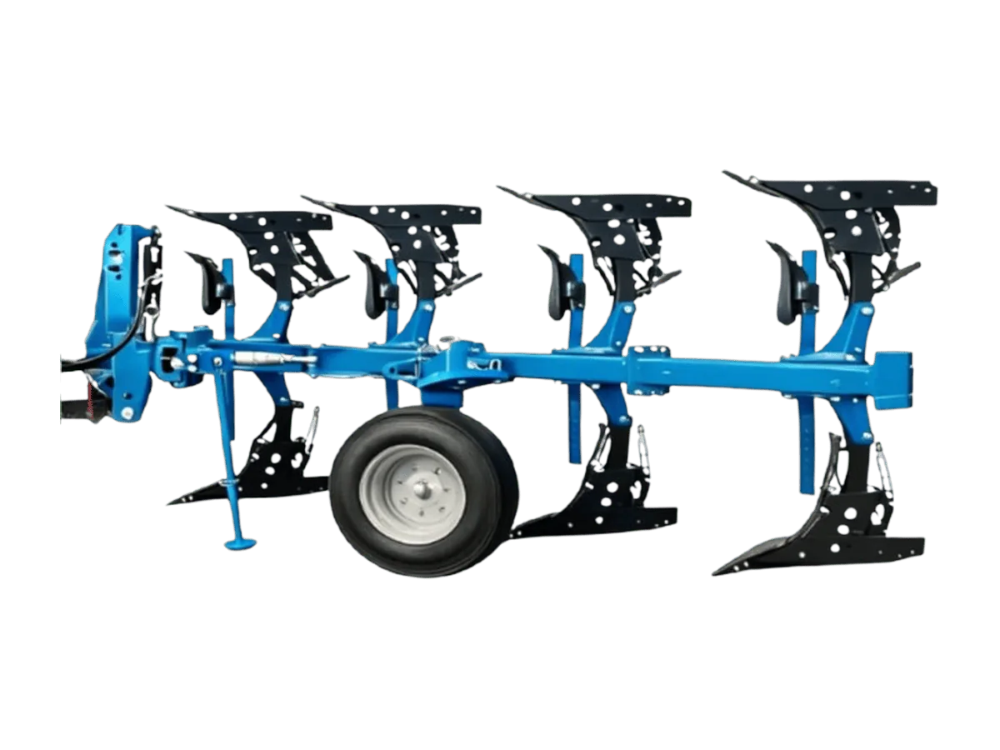

Implement Traktor
Zoomlion Reversible Plow 1LF-Q450T / Q550T
1LF-Q450T / Q550T
Bajak balik (reversible plow) ringan untuk tanah berpasir, tanah hitam, dan jenis tanah bertekstur ringan lainnya.
Keunggulan
- Rangka ringan mengurangi beban tarik dan menghemat BBM di tanah ringan
- Share bolak-balik (double-ended) bisa dipakai ulang hingga 4 siklus kerja, ketahanan aus 2–3× lebih tinggi dibanding produk sejenis
- Desain sliding headstock memudahkan penyetelan kelurusan (alignment)
- Kontrol kedalaman stepless lewat baut penyetel, presisi dan praktis
Spesifikasi
| Model | 1LF-Q450T / 1LF-Q550T |
|---|---|
| Dimensi (P × L × T) | 4410 × 2416 × 1760 mm (Q450T) / 5168 × 3045 × 1798 mm (Q550T), versi standar |
| Berat | 1576 kg (Q450T) / 1826 kg (Q550T) |
| Kebutuhan Daya Traktor | 160–220 HP (Q450T) / 200–260 HP (Q550T) |
| Kategori Hitch | Category 2, Category 3, Category 3N |
| Struktur Rangka Utama | In-furrow, 4 alur (3+1) (Q450T) / In-furrow, 5 alur (4+1) (Q550T) |
| Ukuran Beam | 120 × 120 × 10 mm |
| Lebar Alur | 1000 mm |
| Jarak Bebas Bawah Beam | 800 mm (Standar) |
| Lebar Badan Bajak | 350/400/450/500 mm |
| Kedalaman Bajak | 0–380 mm |
| Metode Penyetelan | Mekanis |
| Kecepatan Kerja | 6–12 km/jam |
| Kecepatan Transportasi | 25 km/jam |
| Roda Kedalaman | Combined Depth & Transport Wheel |
| Proteksi Beban Lebih | Shear Bolt |
| Konfigurasi Badan Bajak | Slatted Body, Reinforced Plow Leg Plate |
| Bajak Depan | Small Front Moldboard |
Tanya harga & ketersediaan unit
Tim kami siap membantu memilih unit yang sesuai kebutuhan lahan Anda.